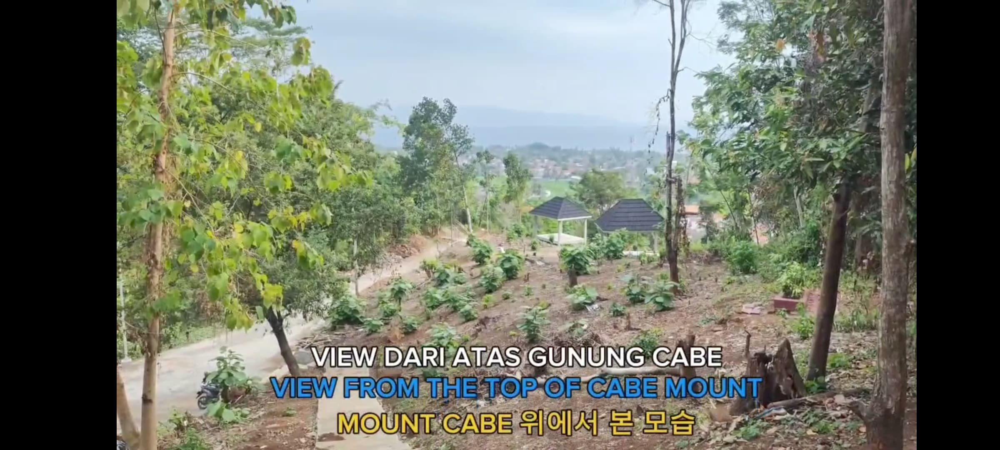

Wisata Edukasi Gunung Cabe adalah destinasi unik di Desa Cimaja yang menggabungkan keindahan alam dengan pengalaman belajar yang interaktif. Terletak di kawasan perbukitan hijau, Gunung Cabe menawarkan suasana asri yang sejuk serta berbagai kegiatan edukatif yang cocok untuk keluarga, pelajar, dan pecinta alam.
